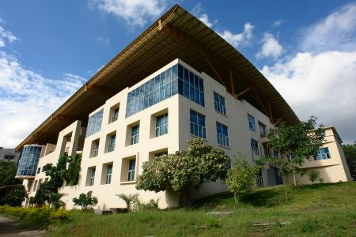

International Institute Of Information Technology(I²IT)
Approved by AICTE | Recognized by DTE, Govt. of Maharashtra
Affiliated to the Savitribai Phule Pune University
Accredited by NAAC | NBA Accredited - 2 UG Programmes
Recognized u/s 2(f) of the UGC Act, 1956
Welcome to I2IT
The International Institute of Information Technology (I²IT), Pune [pronounced as I Square IT] was established by Late Shri. P. P. Chhabria, Founder Chairman of Finolex Group of Industries, a well-known philanthropist, and former President of Mahratta Chamber of Commerce, Industries and Agriculture (MCCIA).
As a world-class academy to impart high-end education in Engineering and Technology the Institute has strived to meet the growing needs of the industry.
Established on 10 acres of land, this institute equips students to accept challenges in the areas of Information Technology, Engineering and other niche areas of expertise.
Vision
I²IT aspires to be an academic leader recognized for innovation and quality in teaching holding high moral values and opportunities for both the students and the institution.
Mission
To formulate and bestow students to be competent by helping them develop the knowledge, skills and abilities required to progress within the workforce and to adapt and prosper in our increasingly diverse and ever-changing world
To encourage, progress, spread and utilize knowledge in order to provide access to quality education for diverse group of students and to unite individuals for long-lasting wisdom and to contribute to the growth of the society and the individual
To provide an intellectually inspiring learning skills through effective teaching, research and service facilitating students to pursue certainty and gain knowledge and skills necessary for establishing fruitful careers and becoming responsible people in the society
International Institute Of Information Technology(I²IT)
Approved by AICTE | Recognized by DTE, Govt. of Maharashtra
Affiliated to the Savitribai Phule Pune University
Accredited by NAAC | NBA Accredited - 2 UG Programmes
Recognized u/s 2(f) of the UGC Act, 1956

